Gabriel Mendes
Resumo
"A parte mais bonita do seu corpo é para onde ele está indo."- Ocean Vuong
Meu nome é Gabriel Mendes, tenho 16 anos e
estou me formando no curso de
Tecnologia da Informação no SENAI integrado ao meu ensino médio na rede SESI,
minhas áreas de conhecimento com maior aptidão é a de exatas e humanas, pretendo para meu futuro me tornar
professor universitário de Relações Internacionais.
Atualmente moro na cidade São Sebastião do Passé-BA com meus pais.
Meus fatos:
- Minhas cores favoritas são: roxo, vermelho escuro e preto;
- Meus números favoritos são todos os múltiplos de 5.
Formação
Minha formação escolar se iniciou na escola Arco-Íris, localizada na cidade onde eu resido, em que eu fiquei
do fundamental I até o II, no ano de 2025, ingressei
na instituição SESI para realizar meu ensino médio técnico, aonde me encontro atualmente. Agregado ao ensino
médio, realizo o curso Técnico em Informática
para Internet e venho me adaptando.
Devido minha participação na Iniciação Científica, linha de pesquisa: Sociologia das Diferenças, tenho formação em Metodo-
logia de Pesquisa e Orientação de projetos de Iniciação Científica pela plataforma APICE e estou realizando o curso de Metodologia da Pesquisa:
Aprofundamento
Teórico e Prático, pela mesma.
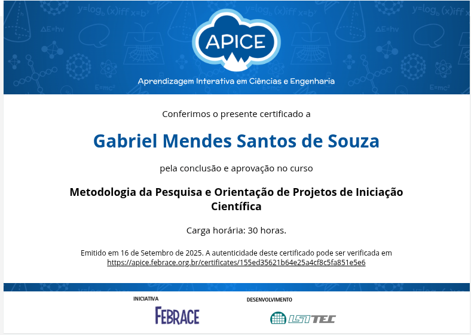
Meus projetos pessoais...
- Projeto Amostra STEAM, cujo tema de desenvolvimentoo está senso: Aplicativo de Alfabetização Digital para Idosos, o
Conecta+
- Desenvolvimento do meu projeto de investigação científica, em que o tema de investigação da pesquisa é:
"Cocaína Comportamental: Uma Análise do Scroll Infinito e o Sequestro da Atenção em Jovens.
Para acessar os materiais produzidos,clique aqui!
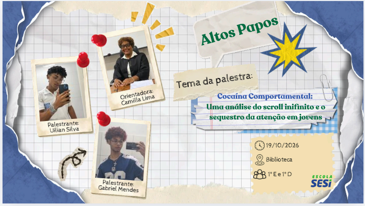
- Estou desenvolvendo uma campanha de RPG(Role Playing Game) entre meus amigos, cujo título é: Mania,
a história é ambientada em um manicômio dos anos 50 que apresenta manifestações paranormais e esconde
história sombria. O sistema utilizado é o Ordem Paranormal
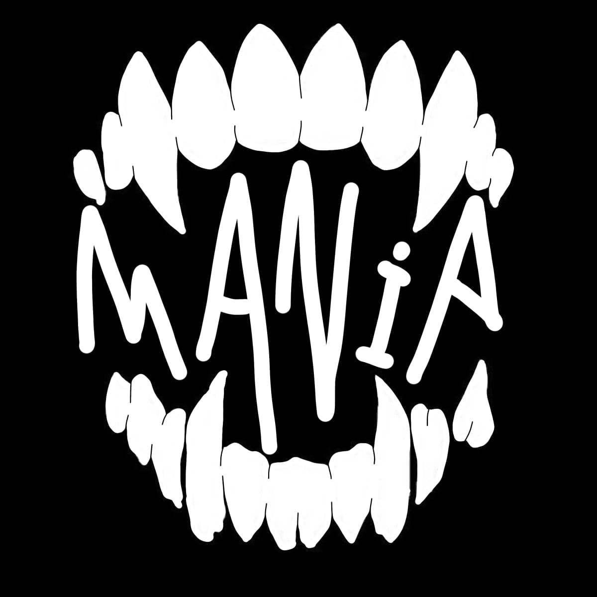
Hobbies que possuo...
- Ler livros
- Andar de skate
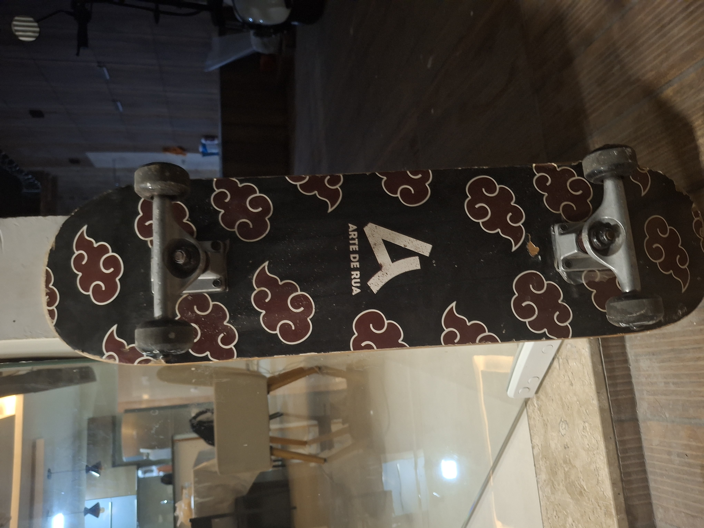
- Desenhar
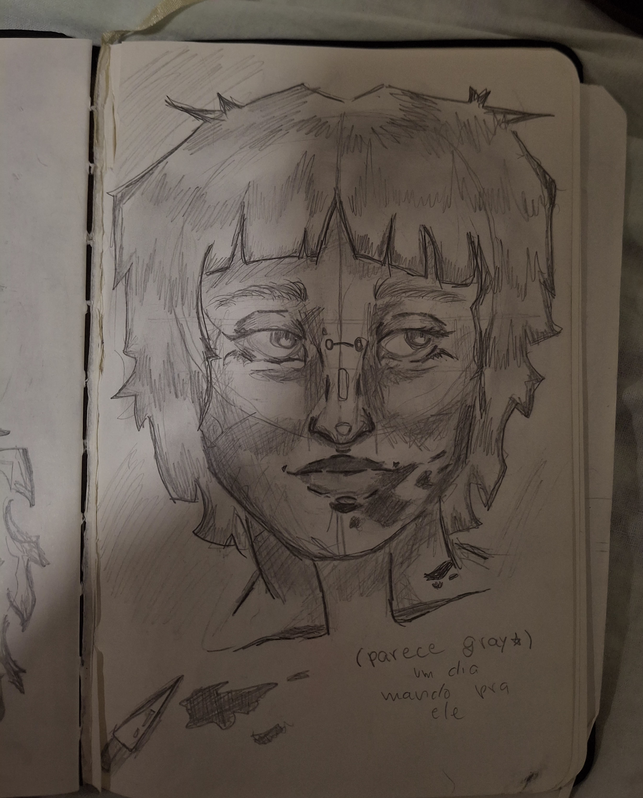
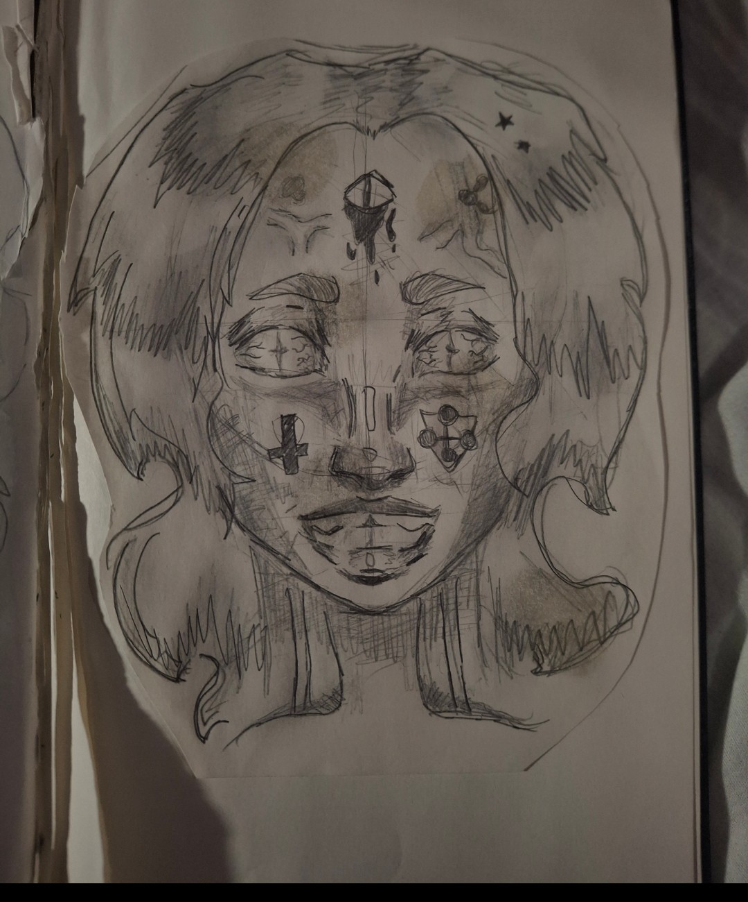
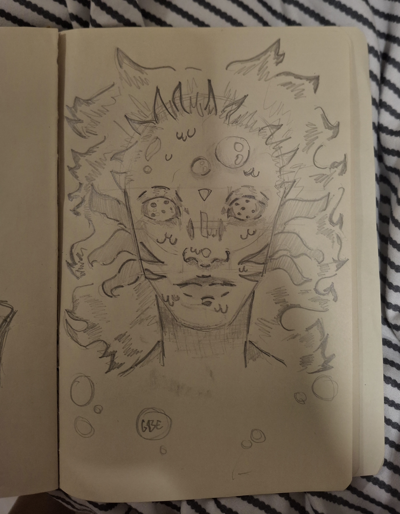
- Escrever absolutamente qualquer coisa
- Assistir filmes (principalmente terror psicológico ou surrealista)
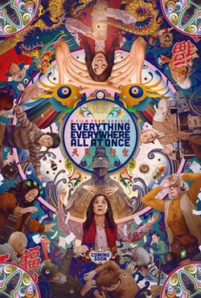
Minhas referências pessoais...
Filme: Tudo em todo lugar ao mesmo tempo(2022)
Se trata de um filme de ficção científica, drama e ação, retratando o cotidiano uma família nipo-americana em crise
nas
suas diferentes esferas, financeira, afetiva, comunicativa, etc.,
até o momento em que a mãe, Evelyn Wang, interpretada
por Michelle Yeoh, se depara com uma emergência multiversal
e tem que se locomover entre diferentes realidades e en-
frentar desafios internos e externos (recomendo muito).
É um dos meus filmes favoritos da vida, me emocionando toda vez que assisto, por possui uma abordagem filosófica existen-
cialista e debate temas essenciais, como relacionamentos interpessoais, comunicação, até vivências LGBT's e teoria do
caos através de metáforas científicas.
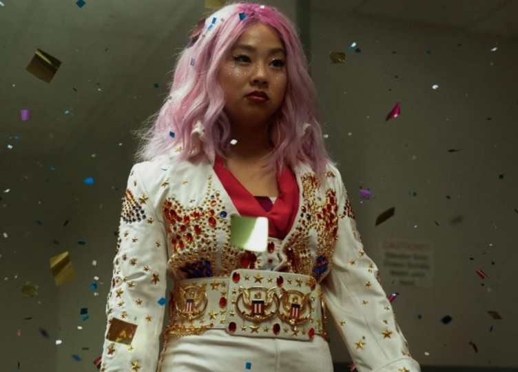
Livro: O amor não é óbvio-Elayne Baeta(2019)
Livro de romance sáfico, narra a história sob a perspectiva de iris Pessêgo,
uma estudante no último ano do ensino mé-
dio, que acaba por lidar por
grandes autodescobertas quanto sua sexualidade e interres amoros, desenvolvendo
atração
pela garota misteriosa de sua escola, Édra Norr.
Atualmente é um dos melhores livros de romance que li esse ano por retratar de forma real e não estereotipada relaciona-
mentos e vivências LGBT's, principalmente em regiões interiores,
além de possuir uma escrita fluida.
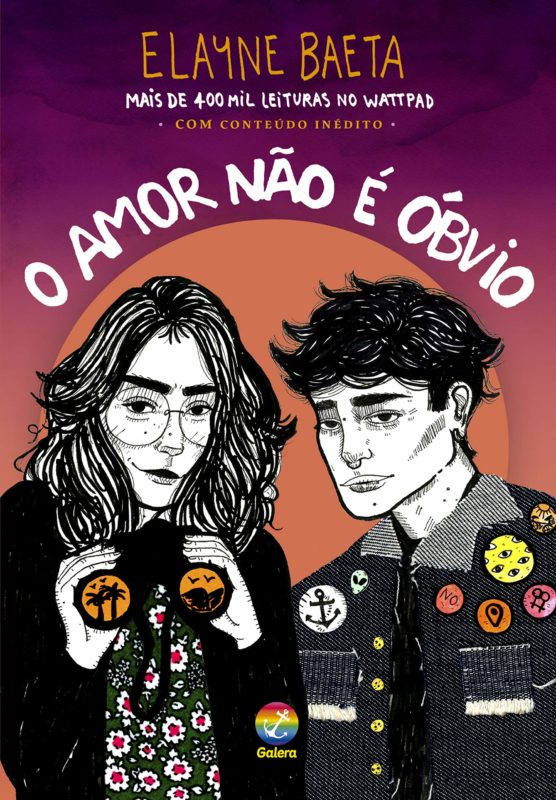
Música: First Love/Late Spring-Mitski
A letra busca expor um romance intenso, na fase da adolescência, a
cantora utiliza o rock alternativo para expressar a mensagem.
Ela retrata os contrastes desse amor, trazendo versos que
denotam tristeza, desespero e a ânsia para que aquilo tenha um fim e ao
mesmo tempo a vontade e o desejo de vivenciar aquilo e estar ali.
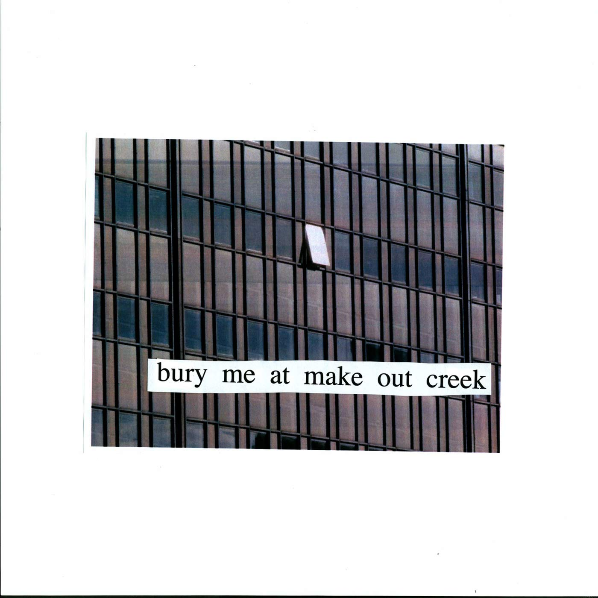